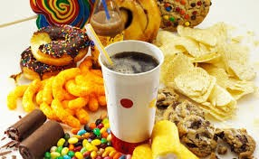
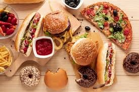

Conhecendo os alimentos: do natural aos industrializados
Alimentos processados Alimentos processados são produtos fabricados pela indústria com a adição de sal, açúcar, óleo ou outras substâncias de uso culinário a alimentos in natura para aumentar sua durabilidade, sabor ou textura. Exemplos incluem conservas, pães artesanais, queijos e frutas em calda. Diferenciam-se dos ultraprocessados, que possuem aditivos sintéticos. Exemplos: salgadinho, chocolate, hamburguer, donuts, bolacha.
Diferença entre processado e natural A principal diferença entre alimentos in natura e processados é a alteração industrial: os in natura são obtidos direto de plantas ou animais sem mudanças, enquanto os processados recebem sal, açúcar ou óleo para durar mais. In natura/minimamente processados devem ser a base da alimentação, enquanto processados devem ser consumidos moderadamente.

